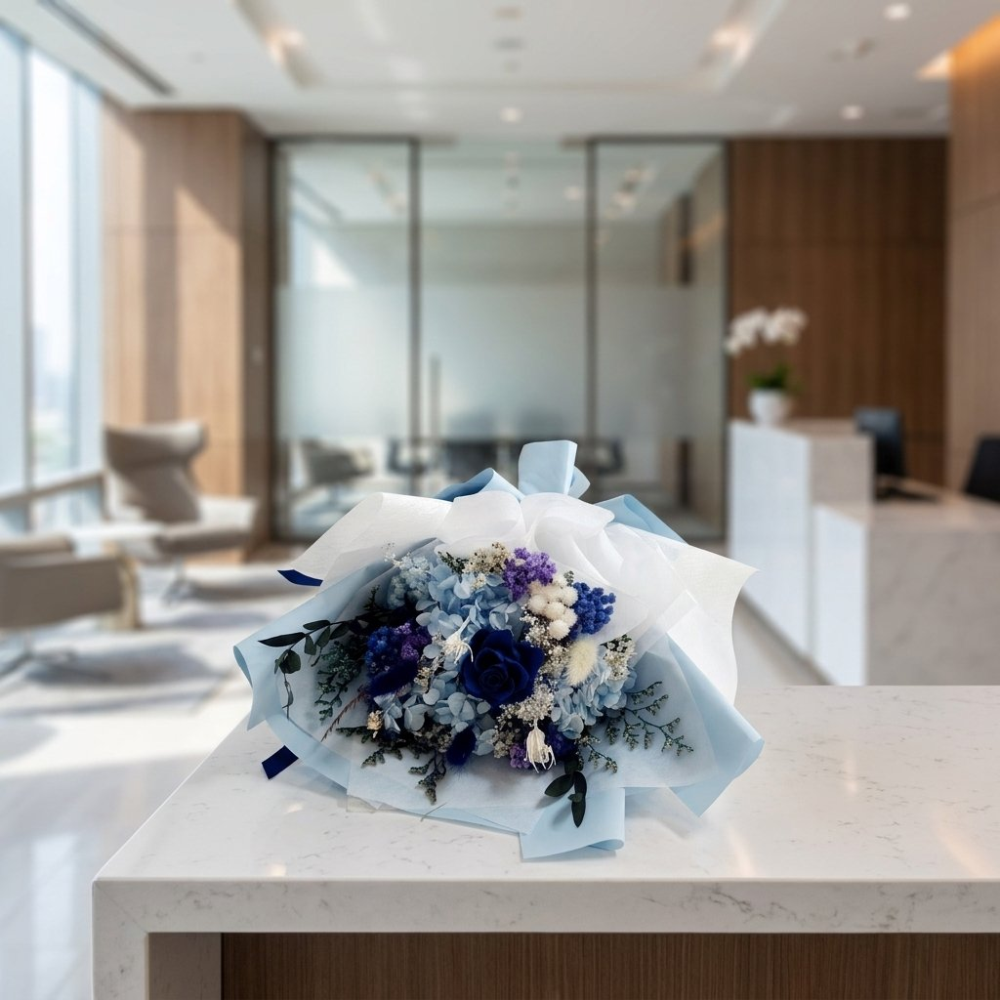

회사 행사에 쓸 꽃을 알아보실 때, 가격표부터 비교하고 바로 결정하시는 경우가 많습니다. 그런데 막상 주문을 넣고 나서야 최소 수량이 안 맞거나, 세금계산서 발행이 안 된다는 사실을 뒤늦게 알게 되는 경우도 적지 않습니다. 한 번 알아보고 다시 다른 곳을 찾아야 하면 일정이 그만큼 늘어지기 때문에, 견적을 요청하시기 전에 아래 다섯 가지만 먼저 확인해 두시면 나중에 다시 알아보러 다니는 수고를 줄이실 수 있습니다.
1. 최소 주문 수량부터 확인하세요
단체 꽃다발은 업체마다 최소 주문 기준이 다릅니다. 대량 주문 위주로만 받는 곳도 있어서, 부서 단위의 적은 인원이나 시상식 수상자 몇 명분만 필요한 경우엔 문의 자체를 거절당하는 일도 있습니다. 반대로 소량만 가능한 곳은 규모가 커지면 감당이 안 되기도 합니다. 테차는 최소 10개부터 문의하실 수 있어, 소규모 부서 행사에서도 부담 없이 알아보실 수 있습니다. 수량이 늘어날수록 할인율도 함께 커지는 구조라, 대략적인 인원부터 정해두시면 예산을 짜실 때도 참고가 됩니다.
2. 세금계산서·견적서가 바로 나오는지 확인하세요
기업에서 지출을 처리하려면 세금계산서와 견적서가 필수인 경우가 대부분입니다. 그런데 화훼 업체 중에는 현금영수증만 가능하거나, 서류 발급에 며칠씩 걸리는 곳도 있어 총무·구매 담당자 입장에서는 결재 일정이 꼬이기 쉽습니다. 특히 분기 마감이나 예산 소진 기한이 걸려 있는 시기라면, 서류 하나 늦게 받는 것만으로도 처리가 다음 달로 넘어가 버리는 경우도 있습니다. 테차는 문의하시면 견적서와 세금계산서를 함께 준비해 드리고, 선입금 후 온라인으로 바로 진행하셔도 되고 수량·일정을 먼저 상담받으신 뒤 진행하셔도 됩니다.
3. 준비 기간(리드타임)을 확인하세요
단체 꽃다발은 개인 선물과 달리 한 번에 여러 개를 같은 품질로 맞춰야 해서 제작에 시간이 필요합니다. 테차의 기본 제작 기간은 3영업일입니다. 행사 일정이 촉박하시다면 익일 대응도 협의드릴 수 있지만, 이 경우 추가 작업으로 비용이 조금 더 들 수 있다는 점은 미리 알아두시면 좋습니다. 확정된 날짜가 있으시다면 최대한 여유 있게 문의해 주시는 편이, 급하게 협의하시는 것보다 준비 과정에서 서로 부담이 덜합니다.
4. 배송 범위와 당일 배송 가능 여부를 확인하세요
행사 장소가 어디인지에 따라서도 준비 방식이 달라집니다. 지방 행사라면 전국 배송이 되는지부터 확인하셔야 하고, 수도권 행사라면 당일 배송까지 가능한지도 챙겨볼 만합니다. 테차는 전국 배송을 기본으로 하며, 고양·서울 권역은 당일 배송도 가능합니다. 리허설 시간에 맞춰 도착 시간을 조율할 수 있는지도 함께 문의해 두시면 당일 동선을 짜실 때 수월합니다.
5. 색상을 행사 분위기에 맞출 수 있는지 확인하세요
같은 구성이어도 색상에 따라 행사 인상이 달라집니다. 시상식처럼 무대 위에서 멀리서도 또렷하게 보여야 하는 자리와, 창립기념일처럼 차분한 분위기가 어울리는 자리는 어울리는 색이 다릅니다. 조명이 어두운 행사장이라면 진한 색보다 밝은 색 계열이 무대 위에서 더 또렷하게 보이기도 합니다. 테차는 블루·퍼플·옐로우 등 여러 컬러 라인을 이미 보유하고 있어, 행사 성격에 맞춰 골라보실 수 있습니다.

정리하면, 견적을 요청하시기 전에 확인해두시면 좋은 것은 이렇습니다.
- 수량 — 몇 개부터 받아주는지, 몇 개까지 할인이 적용되는지
- 서류 — 세금계산서·견적서가 문의 즉시 나오는지
- 기간 — 기본 제작 기간과 긴급 대응 가능 여부
- 배송 — 지역 범위와 당일 배송 가능 여부
- 색상 — 행사 성격에 맞는 컬러를 고를 수 있는지
이 다섯 가지는 저희가 총무·구매 담당자분들께 실제로 가장 많이 받는 질문이기도 합니다. 감동도 물론 중요하지만, 그 감동이 제대로 전해지려면 서류와 일정부터 먼저 정리되어야 한다는 걸 알기에, 저희 쪽에서도 이 순서대로 먼저 안내해 드리는 편입니다.

자주 묻는 질문
Q. 견적은 얼마 만에 받아볼 수 있나요?
A. 문의 주신 내용은 꼼꼼히 검토한 뒤 순차적으로 회신해 드리고 있으며, 프로젝트 성격에 따라 보통 1~2영업일 정도 걸립니다.
Q. 부서마다 인원이 다른데, 색상을 나눠서 준비할 수 있나요?
A. 가능합니다. 구성은 동일하게 두고 색상만 부서별로 다르게 준비해 드릴 수 있어, 형평성 문제 없이 정돈된 인상을 주실 수 있습니다.
Q. 미니 꽃다발과 비누꽃다발처럼 다른 상품을 한 번에 섞어서 준비할 수 있나요?
A. 가능합니다. 시상식용은 미니 꽃다발로, 답례품은 비누꽃다발로 나누는 식으로 한 번의 문의에서 함께 준비해 드릴 수 있습니다.
마무리
회사 행사 꽃은 감동도 물론 중요하지만, 그 전에 서류와 일정부터 먼저 정리되어야 하는 자리입니다. 최소 수량, 세금계산서, 준비 기간, 배송 범위, 색상까지 미리 확인해 두시면 당일 준비가 한결 가벼워집니다. 단체 주문이나 견적이 궁금하시면 편하게 문의해 주세요.